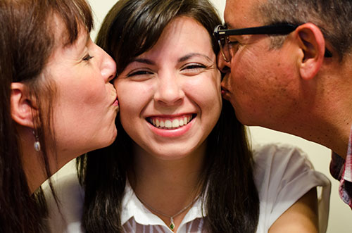
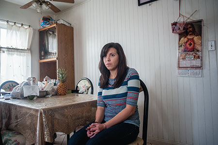

On every ethnic and racial demographic form attached to a survey or application, I have always stopped and gotten stuck at which option to select. White or Latino/Hispanic? Which am I?
My father is a fourth generation Mexican-American and my mother is a mix of various European heritages. My mother, who towers over my father, is amazonian in stature and has blue-gray eyes and fair skin. Her maiden name is Rothenberger.
My father is a small, dark-haired man with tan skin. Passersby have often said he strongly resembles Vicente Fernández, a famous Mexican singer. I, on the other hand, have been torn between two racial identities my whole life. A mix of European and Mexican heritages. Between Caucasian and Latino options, I have always gotten uncomfortable.
Which am I? What am I more of?
I’m too white for my dad’s family and I’m too brown for my mom’s. However, being mixed has always been more of an issue on my father’s side. The night after my first day of kindergarten, we visited my extremely religious, “viva la familia,” Mexican-American grandmother, Mary. “What did you do in school, india guera?”
She has called me this ever since I can remember as a back-handed term of endearment. It means white Indian, and shows exactly what her perspective of me was and still is. Latina but not Latina enough. A half-breed. Biracial.
“We practiced writing our names,” I said.
I scribbled in my childlike writing on scratch paper that she left out for me to draw on. “Julia Gutierrez,” I dictated in standard, accentless English. “Gut-i-er-rez.”
“That’s not how you say it mija! Roll your ‘r’s.” Mary often scolded me for this. I always stared at her stoically as she tried to force me to “roll my r’s.”
‘Roll my r’s? How the hell does that work?’ My tongue couldn't find the right place to say my last name the “right” way. But why would it? I lived with a redheaded European and a father who always said, “I’m an American, not a Mexican. Mexicans are from Mexico.”
I didn’t know a lick of Spanish. To Mary, my mother ruined my life by not getting me baptized in a Catholic church, throwing me a quinceañera or teaching me how to speak Spanish.
For some reason she thought if she forced it enough, I would learn it. She constantly spoke Spanish in conversations with me as if I knew exactly what she was saying. But I had no idea. I just smiled and nodded until she stopped.
I love Mary, but I was never as close to her as I was with my mother’s mom, Maureen. Probably because half the time I didn’t know what she was saying. Maureen has always been good to me. She never spoke a language I didn’t understand, she never tried to shove frijoles and sopa down my throat, and she never made me roll my r’s when saying any word requiring more than one ‘r.’But before I was born she was under the impression that I would be born wearing a sombrero, singing “La Bamba.”
To Maureen I was a full-bred Mexican. Even though I grew up showing no sign of siding with that part of myself. I loathed Mexican food as a child, I didn’t speak Spanish and my skin was pasty. I spent more time with my mother than my father, and after my parents separated, I rarely saw the other half of my family. But she still saw me that way. Even though I was ultimately raised by her daughter.
So I have one side of the family that looks at me as a white girl and the other side of the family thinks otherwise. I am not brown enough to be Hispanic but I am not white enough to be Caucasian.
What am I?
I struggled with this question throughout my life. After leaving my cushy private school for a public education, I frequently received comments from my peers about race. I attended a school that was full of ESL participants and kids with Lopez, Hernandez, Gomez, Gutierrez or Rodriguez as a last name.
“Are you Mexican?” one student asked. Many students asked this question after hearing my last name.
“Yes, but only half, my dad is Mexican,” I replied. “Well, what part of Mexico is your dad from?”
My peers were usually puzzled as I explained that my father was not from Mexico, and neither was his mother or his father. He has only been to Mexico a few times and last time it was to vacation in Cabo San Lucas with my mother.
The racial confusion was also pointed out by my teachers, even throughout high school. When teachers took roll for the first time, they said my first and last name in a Spanish accent, almost as if they expected me to reply saying “Hola.”
“Here,” I said, and my teachers seemed confused. I was obviously not who they were expecting.
Although situations similar to these have continued to occur, I have become less annoyed and more humored by them. I laugh off the awkwardness and choose to not fit into any category.
I’ve come to the conclusion that I am just me. I am eclectic. I am just human and I do not associate myself with race or with any specific side of my family. Now when I see a racial demographic form attached to a survey or application, I don’t answer.